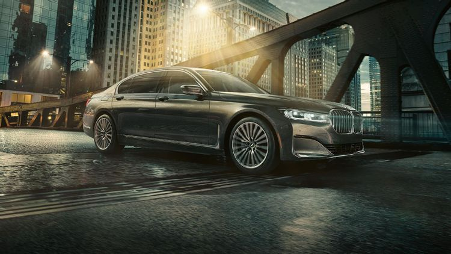
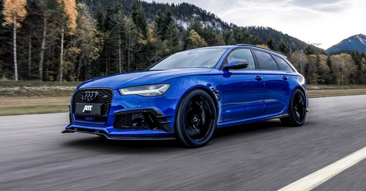

Germany Is Where The Automobile Was Invented
One of the most viable reasons as to why German manufacturers make the best luxury cars might be because the modern automobile was actually born there. In 1885, a man by the name of Carl (sometimes known as Karl) Benz unveiled the world's first petrol-powered automobile in the form of the Benz Motorwagen. Though it was not luxurious by any stretch of the imagination, it was still more convenient than walking (so that's a start).
As you might have guessed, Karl did eventually start his own company, known today as Mercedes-Benz. Funnily enough, not only did a Benz family member make the "first" automobile; it was also a Benz family member that engaged in the first automobile-centric road trip. Karl's wife, Bertha Benz, would end up driving from Mannheim to Pforzheim to prove to her husband that his invention could be used for long-distance travel (and she would succeed).
Manufacturing And Engineering Are Highly Respected
Engineering is typically viewed in most countries as a noble and fantastic profession; however, in Germany, that view is magnified by a huge margin. Because of this, Germany's engineering education is some of the best in the entire world. According to Engineering Daily, their "vocational system is a combination of classroom and business, theory and practice, learning and working".
As a result of this, graduates will typically leave college (or a trade school) with not only the knowledge but also the experience to be successful in this field. Additionally, manufacturing is also seen as a necessary process that goes hand and hand with engineering.
Due to this perceived link, laborers in the manufacturing field are also seen as both important and essential. Due to this nationwide mindset, it is possible that these employees feel much more appreciated and proud of their work; thus, making them more invested in getting the job done right.
They Have A Fantastic Racing Heritage
Before you say, "we are talking about luxury cars, not race cars", please hear this one out. As you might already know, one of the key purposes of developing a race car is so that you can use what you have learned and apply it to your road cars. When you look at all of the German car manufacturers that we had mentioned earlier, every single one of them has held a racing team of some sort throughout their history (most still do).
Prime examples include Audi's Group B rally team back in the '80s, Mercedes first Formula One team back in 1954 (and their current one), BMW's multiple touring car teams, and of course, Porsche's many years spent in Le Mans.
Further, many of these teams were also extremely successful in each of their disciplines. Therefore, it is quite likely that each and every manufacturer was able to apply not only the knowledge from their race cars but also race-winning technology.
The Development Of Great Luxury Cars


The final probable reason as to why Germans make superior luxury cars, simply comes down to their culture as a whole. While obviously there are many facets to a culture, there are some key elements that would definitely foster the traits needed to fabricate such amazing vehicles. Specifically, there are two, which include: Detail-verliebtheit (attention to detail) and Leidenschaft (passionate fervor).
No matter what we are talking about, if you truly want to make the best of the best, it is these qualities that you will have to emulate (how can you make something truly great if you don't pay attention to it nor' have a passion for it?).
The fact that both of these concepts are an accepted and commonly practiced part of German culture likely helps automakers like that of Audi create some of the best luxury cars known to man. At the very least, this fact definitely doesn't hurt this hypothesis.